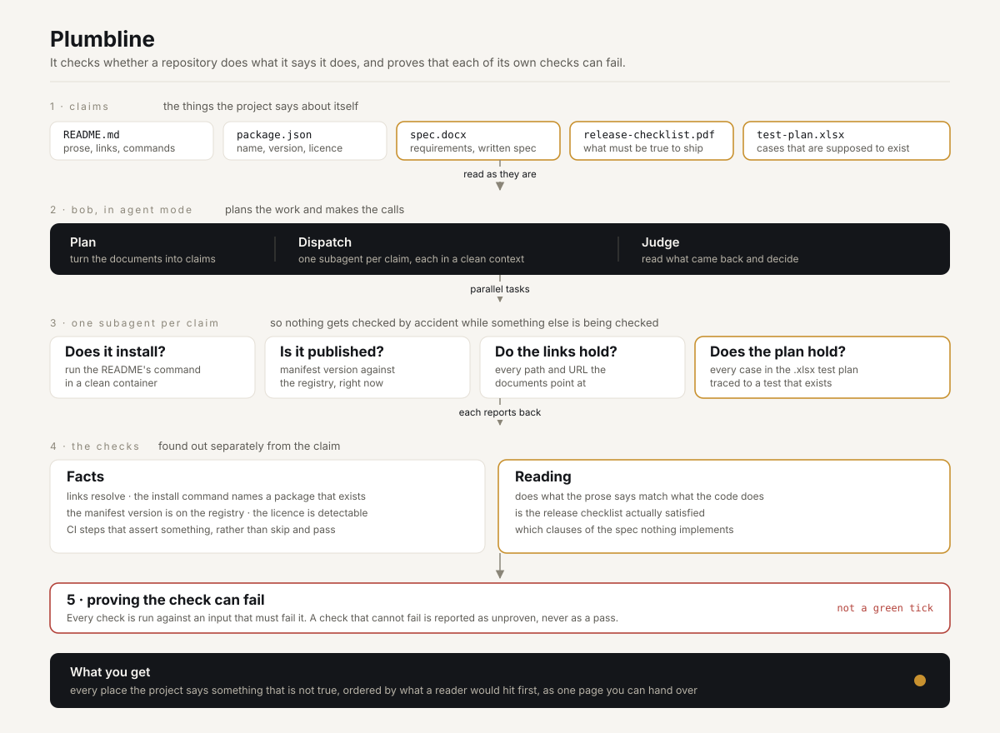

IBM Bob 2.0 Hackathon
It reads what your project says about itself, then goes and checks whether any of it is true.
02 / The problem, measured
Three of the six checks are shown; all six run. There are 26 findings across 23 repositories, because three repositories fail more than one check.
Measured 23 September 2026 against the strongest end of GitHub, not a random sample. My first pass said 89 of 100, which was wrong in the direction that flattered the tool, so I re-checked every finding by hand. Thirteen corrections are in the method. A review found I had been testing only the first 25 links in each README, which took the number to 30, and that my requests did not look like a browser, which one server answered accordingly.
03 / Who this is for
You think you are finished. Nobody has read the README since you wrote it, CI has been green for a month, and the demo link in it was renamed in March.
Green is not the same as true. Nothing in a normal pipeline reads what the documentation claims and then goes to check. So the claims rot quietly, and the first person to find out is a user.
Green is not the same as true.
04 / How it works
Read out of the prose and the documents. The README, the manifest, the specification, the release checklist, the test plan.
Found out separately from the claim. A registry lookup, a real web request, a file that either exists or does not.
A deliberate change that must make the check fail. If it does not, the check is reported as unproven. Never as a pass.
A check nobody has ever seen fail is not evidence. It is a green tick, and a green tick can mean nothing at all.
05 / How it runs

The half that needs no judgement has no Bob dependency and runs in CI on every push.
06 / A real finding
A reader clicks that and gets a 404. The author never saw it, because they never clicked their own link after renaming the file. No test catches this. Nothing in CI reads the README.
ruvnet/RuView, checked against the GitHub contents API. Not a made-up example.
07 / Why this is different
Link checkers exist. Drift detectors exist, and they only see what a commit touched, so a README that was wrong when it was written stays invisible. What none of them do is prove their own checks can fail before they report a pass.
I have shipped a green CI badge that was doing nothing at all. A conformance job ran nightly for days and skipped every test, because it waited on a credential that did not exist. It passed, so nothing drew attention to it. I found it on submission day.
08 / Built with Bob
A claim can live in a .docx, a .pdf or a .xlsx,
not just in markdown. A specification, a release checklist, a test plan. Bob reads those
as they are.
One subagent per claim, each with its own clean context, so nothing gets checked by accident while something else is being checked.
Claims that do not depend on each other are checked at the same time. A hundred repositories do not have to queue up.
Runs the whole thing, decides what is left to check, and writes the result.
Bob access starts on 25 September, so this is the design. The half that needs no judgement is built, has no Bob dependency at all, and runs in CI on every push. It is what produced the number on slide 2.
09 / The check nothing else can do
Bob reads the spreadsheet the way it is, traces every case to a test that exists, and names the ones nobody wrote.
No other tool can do this, because no other tool reads the plan. Every other check in Plumbline has something sitting next to it that does roughly the same job. This one has nothing.
A test plan is a document that claims a level of coverage.
Trace every case to a test that exists in the suite.
The cases nobody wrote, named.
This one is an example, not a measurement, and the slide says so. The check runs on the
25th, when Bob access opens, and it has not been pointed at a real repository yet. The shape of
the answer is 84 cases in the plan, 61 with a test behind them, 23 named. Every
other figure in this deck was measured against the corpus. This one was not, so it is labelled.
10 / What it is worth
11,001links
fetched and tested across 100 repositories, in about fifteen minutes. 9,351 over the network, 1,650 against the repositories' own file trees.
About 9 seconds a repository. By hand this is a day of work, and it is the day nobody spends, which is exactly why the faults survive.
11 / What this does not do
A dead link in a README does not stop anyone installing the package. That is exactly why these faults survive: no test reads what the documentation claims.
The number is a snapshot, which is why it carries its date. The sample is deliberately the
strongest end of GitHub, so 23 in 100 is a floor rather than an average. Workflows that can pass
without checking anything are reported as warnings and kept out of the headline, because
switching a docs job to continue-on-error is a choice someone made, not a lie.
Four full runs on 23 September returned 22, 26, 23 and 22. The counts that come from the corpus are identical in every run; the outcome of each individual link is not, and only a 404 is a finding. 41 of the 100 had a link that could not be reached, so a run prints a candidate set and the published count is what a hand check confirms.
If the tool cannot see something, it says so. It never calls it a pass and never calls it a failure. It does not guess, and it does not accuse.
12 / Try it
Exits 0 on a pass or a warning, 1 on a blocker, 2 when a check cannot be shown to fail. No dependencies. It reads your repository and writes nothing.